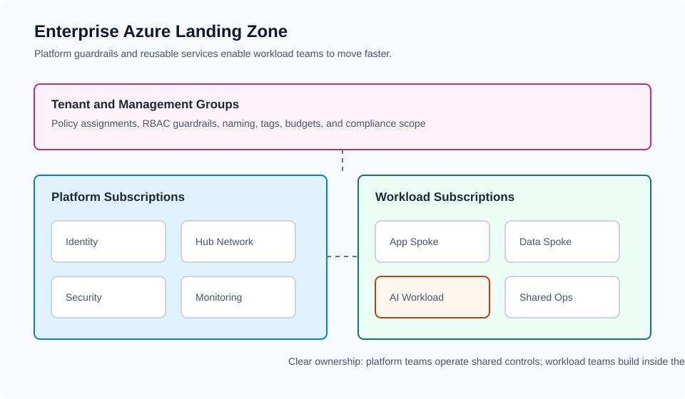

Azure Landing Zones: A Practical Architect’s View
Published March 2026
Landing zones are about enablement, not control.
Reference Architecture

This diagram shows management groups, platform subscriptions, and workload separation.
Key Principles
- Clear control vs workload boundaries
- Centralized networking
- Lightweight governance